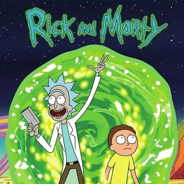

Rick and Morty é uma série de animação adulta norte-americana de comédia e ficção científica criada por Justin Roiland e Dan Harmon para o bloco de programação noturno Adult Swim, exibido no canal Cartoon Network.
A série estreou em 2 de dezembro de 2013 e acompanha as perigosas aventuras do cientista alcoólatra Rick e seu neto Morty, que divide seu tempo entre a vida familiar e viagens interdimensionais.